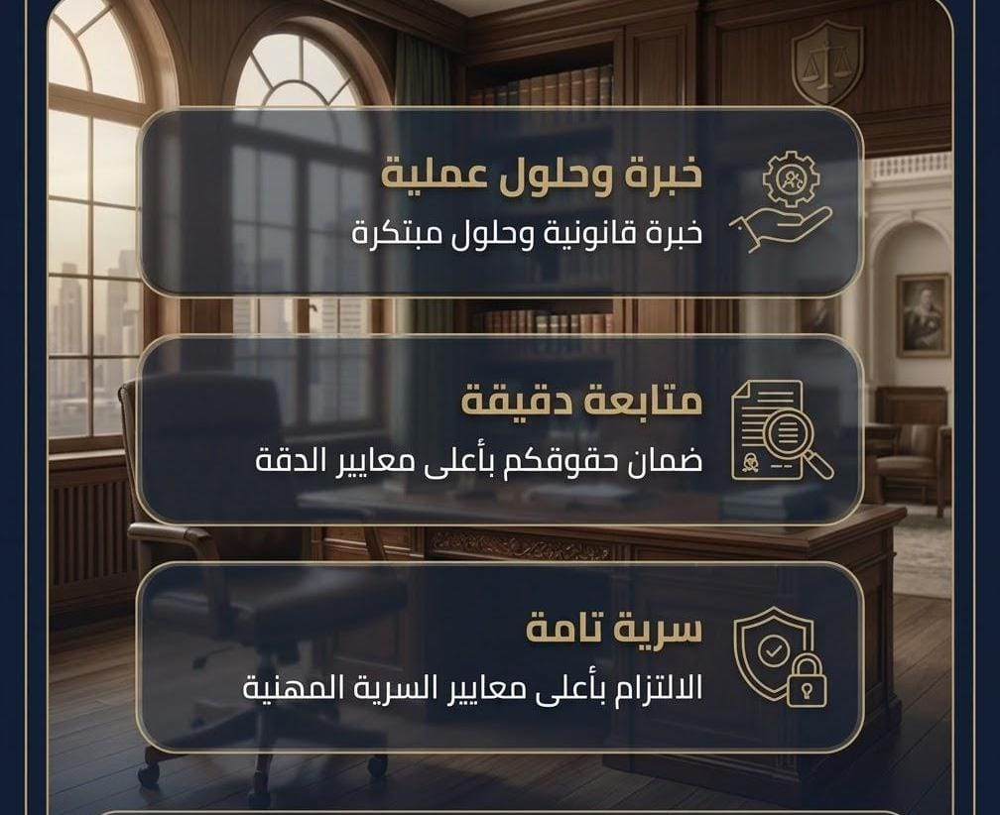

خدمات الأفراد
القضايا الجنائية، الأحوال الشخصية، العمالية، المدنية، العقارية والإدارية.
عرض التفاصيل ←نقدم الحلول القانونية بثقة واحترافية لحماية حقوقكم وتحقيق أفضل النتائج، وفق الأنظمة واللوائح المعمول بها في المملكة العربية السعودية.
نقدم خدماتنا القانونية في جميع مناطق المملكة العربية السعودية

نقدم خدمات المحاماة والاستشارات القانونية للأفراد والشركات في مختلف مناطق المملكة وتشمل القضايا العمالية والقضايا الجنائية والقضايا التجارية والقضايا العقارية والقضايا الإدارية وقضايا الأحوال الشخصية وصياغة العقود ومراجعتها والترافع أمام الجهات القضائية واللجان شبه القضائية والاعتراض على الأحكام.
القضايا الجنائية، الأحوال الشخصية، العمالية، المدنية، العقارية والإدارية.
عرض التفاصيل ←القانون التجاري والشركات، العقود، المنازعات التجارية، العمالية والعقارية والإدارية.
عرض التفاصيل ←صياغة ومراجعة العقود التجارية والشراكات والمقاولات والإيجار والاستثمار.
عرض التفاصيل ←تمثيل ومتابعة القضايا والمنازعات أمام الجهات القضائية والإدارية المختصة.
عرض التفاصيل ←تنفيذ الأحكام والسندات التنفيذية ومنازعات التنفيذ وتحقيق المستحقات والديون.
عرض التفاصيل ←دراسة الوقائع والمستندات وتحديد المسار القانوني والخدمة الأنسب للعميل.
عرض التفاصيل ←مكتب المحامي سعود صالح العنزي للمحاماة والاستشارات القانونية يقدم خدمات قانونية للأفراد والشركات في دراسة القضايا وتحليل المخاطر والترافع والاستشارات وصياغة العقود والمذكرات واللوائح. نستند إلى خبرة عملية وتأهيل قانوني ونقدم حلولًا قانونية تحمي حقوق عملائنا وتعزز مراكزهم القانونية، مع الحرص على فهم احتياجات كل عميل وتقديم المشورة القانونية المناسبة بما يسهم في اتخاذ قرارات قانونية أكثر وضوحًا وأمانًا.
المزيد عن المكتبدليل توعوي مبسط حول المراحل الأساسية.
اقرأ المزيد ←نظرة عامة على أبرز الحقوق والالتزامات.
اقرأ المزيد ←كيف تقلل المراجعة القانونية من المخاطر؟
اقرأ المزيد ←تواصل مع مكتب المحامي سعود صالح العنزي للمحاماة والاستشارات القانونية لدراسة موضوعك وتحديد الخدمة القانونية المناسبة.